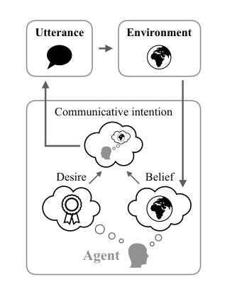

Language Models as Agent Models
Abstract
Language models (LMs) are trained on collections of documents, written by individual human agents to achieve specific goals in an outside world. During training, LMs have access only to text of these documents, with no direct evidence of the internal states of the agents that produced them — a fact often used to argue that LMs are incapable of modeling goal-directed aspects of human language production and comprehension. Can LMs trained on text learn anything at all about the relationship between language and use? I argue that LMs are models of intentional communication in a specific, narrow sense. When performing next word prediction given a textual context, an LM can infer and represent properties of an agent likely to have produced that context. These representations can in turn influence subsequent LM generation in the same way that agents’ communicative intentions influence their language. I survey findings from the recent literature showing that — even in today’s non-robust and error-prone models — LMs infer and use representations of fine-grained communicative intentions and more abstract beliefs and goals. Despite the limited nature of their training data, they can thus serve as building blocks for systems that communicate and act intentionally.
What these errors have in common is a failure to model communicative intent: they may be grammatically or even semantically acceptable, but not the sort of texts that could be produced by an author with a coherent set of beliefs or goals. Nevertheless, the LMs that produce them underlie some of the most striking successes in modern NLP, including high-quality translation, summarization, and question answering (Brown et al., 2020; Chowdhery et al., 2022). (p. 1)
LMs thus learn language in a very different way from humans—they lack access to the social and perceptual context that human language learners use to infer the relationship between utterances and speakers’ mental states (Bloom, 2002; Tomasello, 2005). (p. 1)
They are also trained to perform a very different task: a language model, unlike a human, is not trained to act in any environment or accomplish any goal beyond next-word prediction. So perhaps it is unsurprising that individual samples sometimes do not appear coherent at all. (p. 1)
(C1) In the course of performing next-word prediction in context, current LMs sometimes infer approximate, partial representations of the beliefs, desires and intentions possessed by the agent that produced the context, and other agents mentioned within it. (p. 2)
(C2) Once these representations are inferred, they are causally linked to LM prediction, and thus bear the same relation to generated text that an intentional agent’s state bears to its communciative actions. (p. 2)
Obviously, pairs of samples (Xi, Xj) may contradict each other, and LM samples as a set will not be consistent with A-type beliefs, B-type beliefs, or any other coherent belief set. But within each sampled document xi, the story will be quite different: every document was generated by a single author, and some authors as individuals have coherent beliefs. To model the in-document distribution correctly, a reliable LM must infer the likely author of a prefix in order to select future propositions consistent with that author’s behavior. (p. 3)
but the experiment gives a sketch—an LM, trained on a dataset that is globally incoherent, can model the local coherence of individual documents and behave like specific “authors” on command. Can this LM, as a whole, be conceptualized as an agent with communicative intent? Clearly not: from sample to sample it fails even to generate text according to a coherent belief about the state of the toy world. On the other hand, it encodes a great deal of information about how propositions in this world relate, both to each other and to text. It can infer author identity, and when properly conditioned can imitate individual authors. The LM is not an A-type agent, or an O-type one, but can be straightforwardly made to act like one given the right hidden state. (p. 3)
Like the dataset above, the training sets for most real language models are built from web text; web text is mostly produced by humans, each of whom, at a particular moment in time, with a particular mental state, aimed to achieve a particular goal by writing. And while these mental states, or the text they give rise to, are not globally coherent, individual documents (mostly, locally) are. (p. 3)

How, then, might we model the human agents that produced real language model training data? A simple and general framework for formalizing agentlike behavior in general is given by the Belief– Desire–Intention model (Bratman, 1987, Fig. 1). In this model, the world exists in one of a set of states S. An agent possesses a belief B about the current state of the world, represented e.g. as a distribution over states; and a set of desires D, represented e.g. as a weighting or ordering over possible future states. On the basis of these beliefs and desires, it forms intentions I about how to behave in order to reach a desired state. These intentions give rise to actions A, which affect the world, and give the agent new observations that in turn update its beliefs.2 For agents with the ability to communicate, some of these intentions may be specifically communicative intentions: representations of information to be transmitted to other agents that will cause them to act to accomplish the communicating agent’s desires (Grice, 1969; Austin, 1975). An action produced in response to a communicative intention is an utterance. (p. 4)
1. Agents with beliefs B and desires D are sampled from a population: (B, D) ∼ pagent(·, ·) (2) 2. Each agent forms a communicative intention consistent with its current beliefs and desires: I ∼ pintention(· | B, D) (3) 3. This communicative intention is realized as an utterance: U ∼ putterance(· | I) (4) (p. 4)
we may expect 3This generative process implements a specific theory about why people write. It is a simplification: real LM training corpora contain text whose production was mediated by even more complex latent variables, including aspects of mental state beyond belief (e.g. emotion), text that was not produced with any particular communicative intention at all, and text that was generated by automated processes that cannot be described as intentional (see e.g. Dennett, 1987). (p. 4)
LMs to build hidden representations that encode latent variables analogous to B, G, or I—even when not explicitly trained to do so—for the same reason, and in the same way, that they acquire representations of latent syntactic and conceptual structure without explicit supervision (Hewitt and Manning, 2019; Grand et al., 2022; Piantadosi and Hill, 2022, inter alia). (p. 5)
But from the perspective of subsequent text generation, the effect is the same: in a collection of individually coherent documents, a context constrains the beliefs, desires, and intentions of a hypothetical author. An effective LM must learn to maintain these constraints. (p. 5)
In recent years, however, evidence has begun to accumulate that current LMs encode at least aspects of intentions, beliefs, and desires in the causal sense described above: these encodings control generation in predictable ways. (p. 5)
Evidence for (C1): After training, Radford et al. discovered that a single neuron in the LSTM’s (p. 5)
Explicitly directing LMs to simulate authors whose goal is to communicate truthfully improves LM truthfulness. (p. 7)
Historically, the most effective solutions to these challenges have involved moving from fully unsupervised learning to semi-supervised learning: for example, even tens of annotations dramatically improve grammar induction results (Bisk et al., 2015). We might imagine that even small numbers of documents explicitly annotated with information about authors’ beliefs and goals—or at the very least, richer information about the social and perceptual context in which language is generated—might improve language modeling. (p. 8)
All the examples we have seen involve highly restricted aspects of state—much simpler than the ones we expect useful real-world agents to possess. A possible solution is to develop new LMs that do not condition on fixed-size context windows or state vectors, but instead explicitly factorize shortterm and long-term context components relevant for prediction. (p. 8)
If text-only pre-training can provide even approximate models of the relationships between beliefs, desires, intentions, and utterances, these can in turn provide a scaffold for efficient interactive grounded training, just as they have for other forms of sample-efficient NLP learning. For example, with a better understanding of when (and how) communicative intentions are encoded in LMs, producing goal directed language would require only translating an agent’s (extrinsic) goals into a trained LM’s (intrinsic) intention representation scheme. While this hybrid training paradigm has no obvious analog in evolution or human language acquisition, it might be the only path to research on highquality language modeling compatible with human timescales. (p. 9)
The challenge for NLP, then, is twofold: first, building new model architectures that overcome the limitations outlined in Section 7; second, understanding—deeply and mechanistically—how these architectures infer and reason about the aspects of goal-oriented behavior relevant to our engineering needs. If better language modeling discovers even the vaguest outlines of the broader space of human beliefs, desires, and intentions, they can offer a first step toward agents that reason about other agents’ intentions, and ultimately their own. (p. 9)
@article{Andreas_2022, title={Language Models as Agent Models}, url={[http://arxiv.org/abs/2212.01681](http://arxiv.org/abs/2212.01681)}, DOI={[10.48550/arXiv.2212.01681](https://doi.org/10.48550/arXiv.2212.01681)}, abstractNote={Language models (LMs) are trained on collections of documents, written by individual human agents to achieve specific goals in an outside world. During training, LMs have access only to text of these documents, with no direct evidence of the internal states of the agents that produced them -- a fact often used to argue that LMs are incapable of modeling goal-directed aspects of human language production and comprehension. Can LMs trained on text learn anything at all about the relationship between language and use? I argue that LMs are models of intentional communication in a specific, narrow sense. When performing next word prediction given a textual context, an LM can infer and represent properties of an agent likely to have produced that context. These representations can in turn influence subsequent LM generation in the same way that agents’ communicative intentions influence their language. I survey findings from the recent literature showing that -- even in today’s non-robust and error-prone models -- LMs infer and use representations of fine-grained communicative intentions and more abstract beliefs and goals. Despite the limited nature of their training data, they can thus serve as building blocks for systems that communicate and act intentionally.}, note={0 citations (Semantic Scholar/arXiv) [2022-12-09] 0 citations (Semantic Scholar/DOI) [2022-12-09] arXiv:2212.01681 [cs]}, number={arXiv:2212.01681}, author={Andreas, Jacob}, year={2022}, month={Dec} }